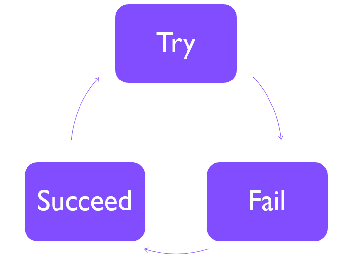

How-To: Debug Software¶
Please Contribute!
This guide is far from complete. Please feel free to contribute, e.g., refer to How-To: Contribute to this Document.
Software development in general or even debugging of software are very broad topics. As such, we will not be able to handle them here comprehensively. Rather, we will give a tour de force on practical and minimal approaches of debugging of software. Here, debugging refers to the process of locating errors in your program and removing them.
Origin of the term debugging
The terms "bug" and "debugging" are popularly attributed to Admiral Grace Hopper in the 1940s. While she was working on a Mark II computer at Harvard University, her associates discovered a moth stuck in a relay and thereby impeding operation, whereupon she remarked that they were "debugging" the system. However, the term "bug", in the sense of "technical error", dates back at least to 1878 and Thomas Edison (see software bug for a full discussion).
When forgetting a moment about everything known about software engineering, programming roughly work sin the following cycle:

You run your program. In the case of failure, you need to remove the problem until the program runs through. You then start implementing the next change or feature. But how do you actually locate the problem? Let us walk through a couple of steps.
Step 1: Find out that there is an error¶
This might seem trivial but let us think about this for a moment. For this
- you will have to run your program on some input and observe its behaviour and output,
- you will need to have an expectation of its behaviour and output, and
- observe unexpected behaviour, including but not limited to:
- the program crashes,
- the program produce wrong or corrupted output, or
- the program produces incomplete output.
You could make this step a bit more comfortable by writing a little checker script that compares expected and actual output.
Step 2: Reproduce your error¶
You will have to find out how often or regularly the problem occurs. Does the problem occur on all inputs or only specific ones? Does it occur with all parameters? Make sure that you can reproduce the problem, otherwise the problem will be hard to track down.
Discard randomness
In most applications, true randomness is neither required nor used in programs.
Rather, pseudo random number generators are used that are usually seeded with a special value.
In many cases, the current time is used which makes it hard to reproduce problems.
Rather, use a fixed seed, e.g., by calling srand(42) in C.
You could also make this a parameter of your program, but make sure that you can fix all pseudo randomness in your program so you can deterministically reproduce its behaviour.
Step 3: Create a minimal working example (MWE)¶
Try to find a minimal input set on which you can produce your problem.
For example, you could use samtools view FILE.bam chr1:90,000-100,000 to cut out regions from a BAM file.
The next step is to nail down the problem.
Ideally, you can deactivate or comment out parts of your program that are irrelevant to the problem.
This will allow you to get to the problematic point in your program quicker and make the whole debugging exercise easier on yourself.
Interlude: What we have up to here¶
We can now
- tell expected and "other" behaviour and output apart (ideally semi-automatically),
- reproduce the problem,
- and reproduce the problem quickly.
If you reached the points above, you have probably cut the time to resolve the problem by 90% already.
Let us now consider a few things that you can do from here to find the source of your problems.
Method 1: Stare at your source code¶
Again, this is trivial, but: look at your code and try to follow through what it does with your given input. This is nicely complemented with the following methods. ;-)
There is a class of tools to help you in doing this, so-called static code analysis tools. They analyze the source code for problematic patterns. The success and power of such analysis tools tends to corellate strongly with how strictly typed the targeted programming language is. E.g., there are very powerful tools for Java, C/C++. However, there is some useful tool support out there for dynamic languages such as Python.
Here is a short list of pointers to static code analysis tools (feel free to extend the list):
Method 2: Inspect your code's activity¶
Print it!¶
The most simple approach is to use print statements (or similar) to print the current line or value of parameters.
While sometimes frowned upon, this certainly is one of the most robust ways to see what is happening in your program.
However, beware that too much output might slow down your program or  actually make your problem disappear in the case of subtle threading/timing issues (sometimes referred to as "Heisenbugs").
actually make your problem disappear in the case of subtle threading/timing issues (sometimes referred to as "Heisenbugs").
Standard output vs. error
Classically, Linux/Unix programs can print back to the user's terminal in two ways: standard output and standard errors. By convention, logging should go to stderr. The standard error stream also has the advantage that writing to it has a more direct effect. In contrast to stdout which is usually setup to be (line) buffered (you will only see output after the next newline character), stderr is unbuffered.
Look at top/htop¶
The tools top and htop are useful tools for inspecting the activity on the current computer.
The following parameters are useful (and are actually also available as key strokes when they are running).
-c-- show the programs' command lines-u USER-- show the processes of the user
You can exit either tool by pressing q or Ctrl-C.
Use the man, Luke!
Besides searching the internet for a unix command, you can also read its manual page by running man TOOL.
If this does not work, try TOOL --help to see its builtin help function.
Also, doing an internet search for "man tool" might help.
Look at strace¶
The program strace allows you to intercept the calls of your program to the kernel.
As the kernel is needed for actions such as accessing the network or file system.
Thus this is not so useful if your program gets stuck in "user land", but this might be useful to see which files it is accessing.
Pro-Tip: if you move the selection line of htop to a process then you can strace the program by pressing s.
Look at lsof¶
The lsof program lists all open files with the processes that are accessing them.
This is useful for seeing which files you program has opened.
You can even build a progress bar with lsof, although that requires sudo privileges which you might not have on the system that you are using.
Pro-Tip: if you move the selection line of htop to a process then you can list the open files by pressing l.
More looking¶
There are more ways of inspecting your program, here are some:
Interactive Debuggers¶
Let us now enter the world of interactive debuggers. Integrated development environment (IDEs) generally consist of an editor, a compiler/interpreter, and an ineractive/visual debugger. Usually, they have a debugger program at their core that can also be used on their command line.
Old but gold: gdb¶
On Unix systems, a widely used debugger is gdb the GNU debugger.
gdb is a command line program and if you are not used to it, it might be hard to use.
However, here are some pointers on how to use it:
The commands in interactive mode include:
quitorCtrl-Dto exit the debuggerb file.ext:123set breakpoint infile.exton line123rrun the programp var_nameprint the value of the variablevar_namedisplay var_nameprint the value of the variablevar_nameevery time execution stopslprint the source code around the current line (multiple calls will show the next 10 lines or so, and so on)l 123print lines around line123fshow information about the current frame (that is the current source location)btshow the backtrace (that is all functions above the current one)nstep to the next linesstep into function callsfinishrun the current function until it returnshelpto get more help
You can call your program directly with command line arguments using cgdb [cgdb-args] --args path/to/program -- [program-args.You can also attach to running programs usingcgdb -p PIDonce you have found out the process ID to attach to usinghtoporps`.
Pro-tip: use cgdb for an easier to use version that displays the source code in split screen and stores command line histories over sessions.
Interactive Python Debuggers¶
You can get a simple REPL (read-execute-print loop) at virtually any position in your program by adding:
import pdb; pdb.set_trace()
You will get a prompt at the current position and can issue several commands including:
quitorCtrl-Dto exit the debuggerp var_nameto print the variable withvar_namefshow information about the current frame (that is the current source location)btshow the backtrace (that is all functions called above the current one)continueto continue runninghelpto get more help
Pro-tip: use import ipdb; ipdb.set_trace() (after installing the ipdb package, of course) to get an IPython-based prompt that is much more comfortable to use.
Pro-Tip: Version control your code!¶
Here is a free bonus pro-tip: learn how to use version control, e.g., Git. This will allow you to go back to previous versions without problems and see current changes to your source code.
Pro-Tip: Write automated tests!¶
Combine the pro tip on using version control (learn Git already!) with this one: learn how to write automated tests. This will allow you to quickly narrow down problematic changes in your version control history.
Again, testing is another topic alltogether, so here are just some links to testing frameworks to get you started:
Reading Material on Debuggers¶
The following web resources can serve as a starting point on how to use debuggers.
- Chapter Debugger from Wikibook: Introduction to Software Engineering
- The Python Debugger
- Debugging with GDB